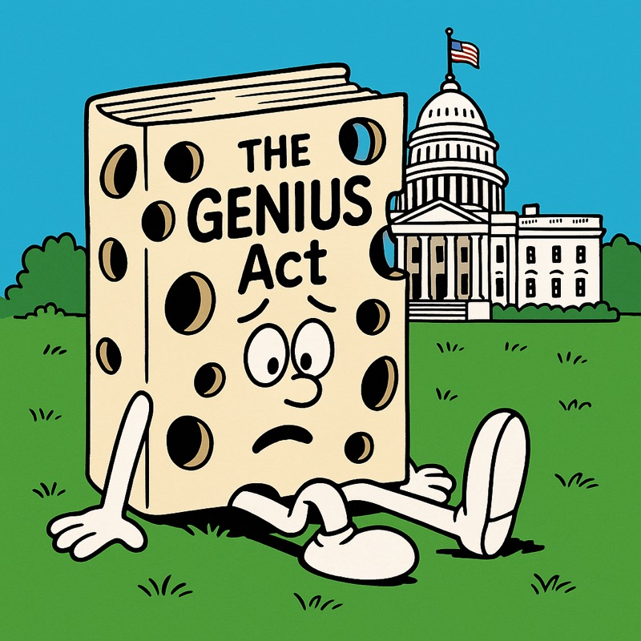
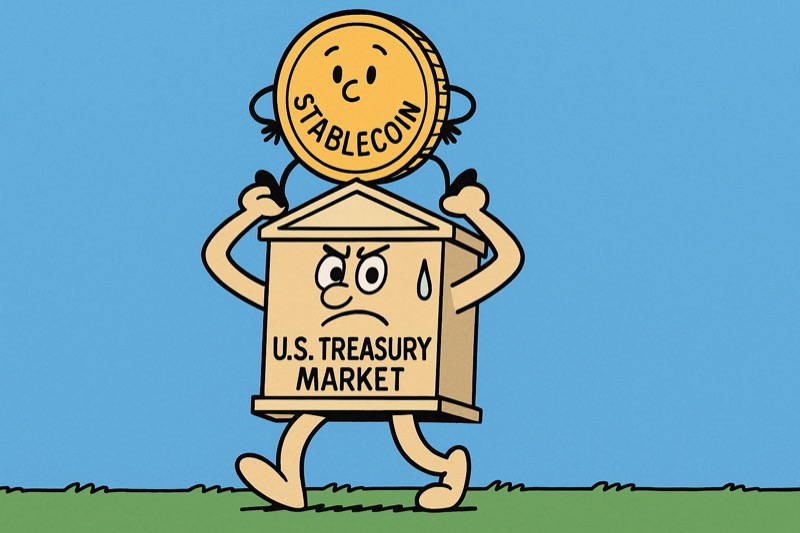
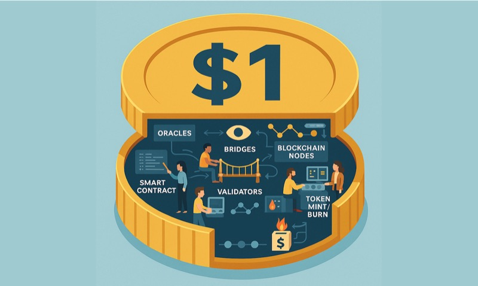
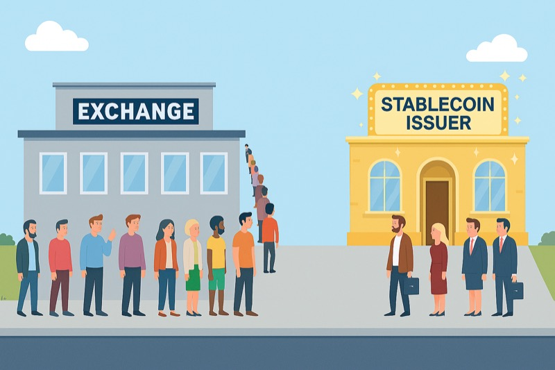
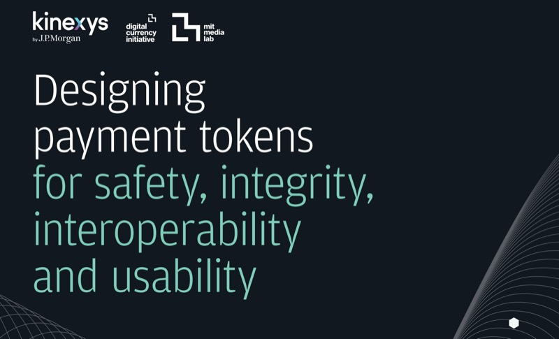
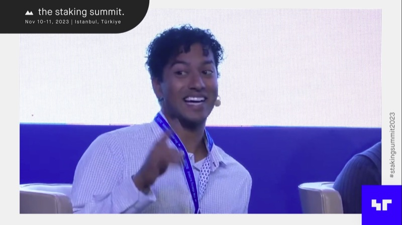

August 28, 2025
The GENIUS Act is Now Law. What's Missing?
The GENIUS Act is the first federal law to regulate stablecoins in the US. This piece looks at what still needs to happen next.
Most of this I wrote as a part-time researcher at MIT's Digital Currency Initiative. I also write on Substack.

August 28, 2025
The GENIUS Act is the first federal law to regulate stablecoins in the US. This piece looks at what still needs to happen next.

August 21, 2025
Stablecoin issuers keep buying short-term Treasuries. Could that buying start to affect the stability of the safest reserve asset in the world?

August 4, 2025
How stablecoins compare to existing financial assets like money market funds, and where those comparisons succeed or fail.

July 15, 2025
How stablecoin redemptions work in practice, and why the process looks so different in the primary and secondary markets.

May 2025
A research paper with JPMorgan's Kinexys and the MIT Media Lab's Digital Currency Initiative on design principles for payment tokens.

November 2023
I moderated a panel at the Staking Summit in Istanbul on where institutional liquid staking protocols stand.